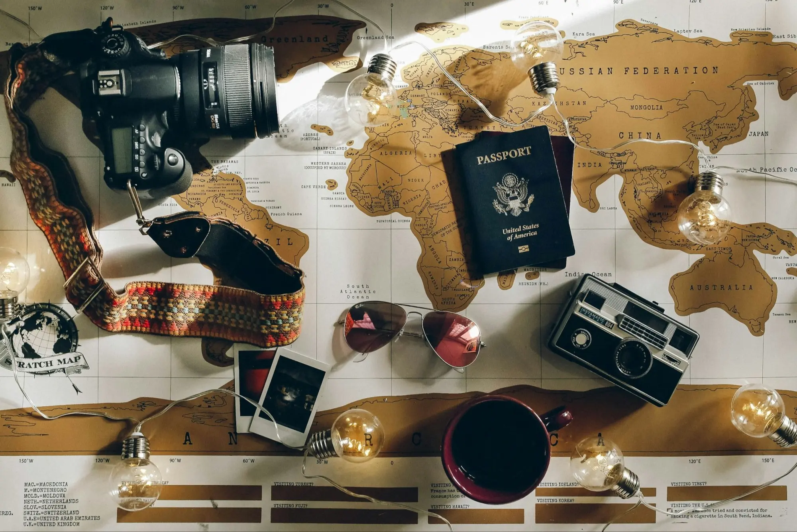
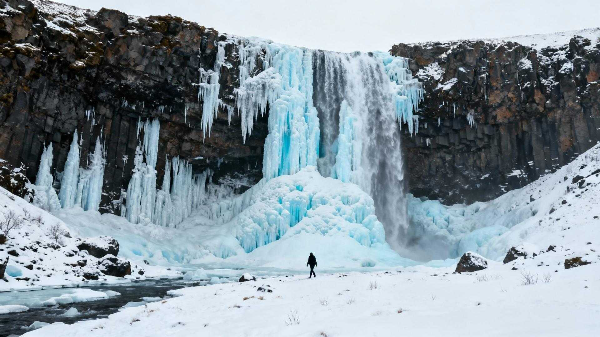
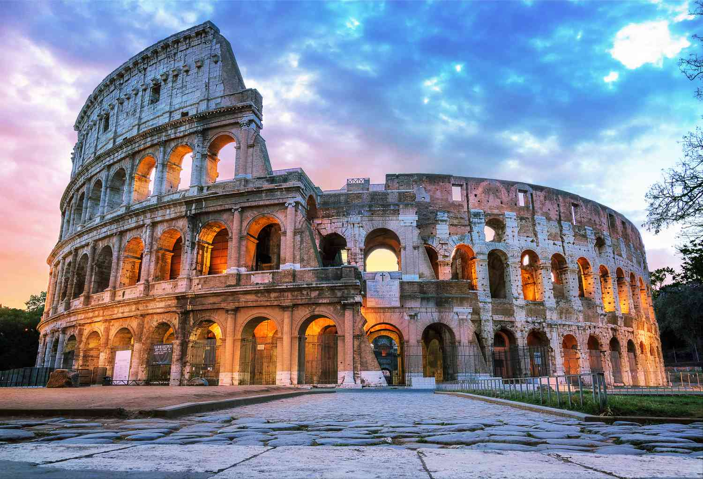

1. Оберіть напрямок
Оберіть країну або місто, яке плануєте відвідати.
Подорожуйте цікавіше — знаходьте місця та місцевих провідників відповідно до своїх вподобань.
Плануйте подорожі відповідно до власних інтересів, знаходьте цікаві місця та місцевих провідників.

TravelGuide допомагає мандрівникам планувати подорожі відповідно до особистих інтересів та знаходити місцевих провідників, які добре знають історію, культуру й особливості місцевості.
Оберіть країну або місто, яке плануєте відвідати.
Оберіть теми, які вас цікавлять: історія, культура, природа, архітектура та інші.
TravelGuide підбере місця, які можуть відповідати вашим інтересам.
За бажанням оберіть місцевого провідника для цікавої та змістовної екскурсії.
Замки, старовинні міста, музеї та інші місця для тих, хто цікавиться історією.

Гори, водоспади, озера та мальовничі природні локації.

Пам'ятки архітектури, культурні центри та місця з унікальними традиціями.
Користувач зможе знайти провідника за містом, мовою, тематикою екскурсії та сферою інтересів.
Профіль міститиме інформацію про досвід, знання історії, мови, спеціалізацію та відгуки туристів.
Рекомендації формуються на основі інтересів користувача. Наприклад, туристу, який цікавиться історією та архітектурою, система запропонує відповідні пам'ятки, музеї та історичні райони.
Маєте питання або пропозицію? Напишіть нам.